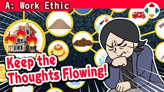
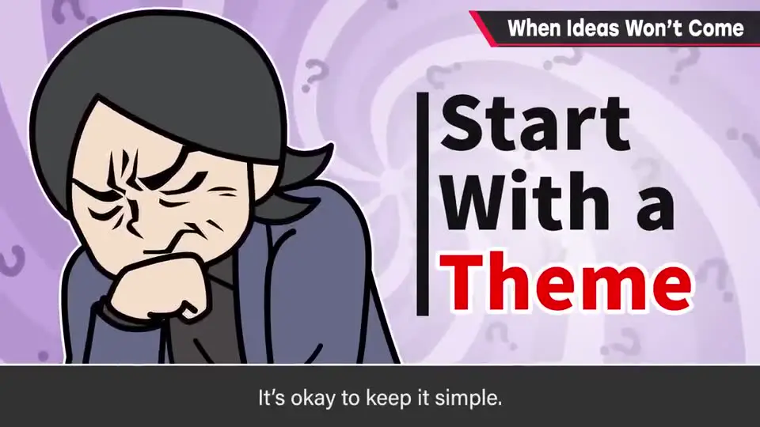
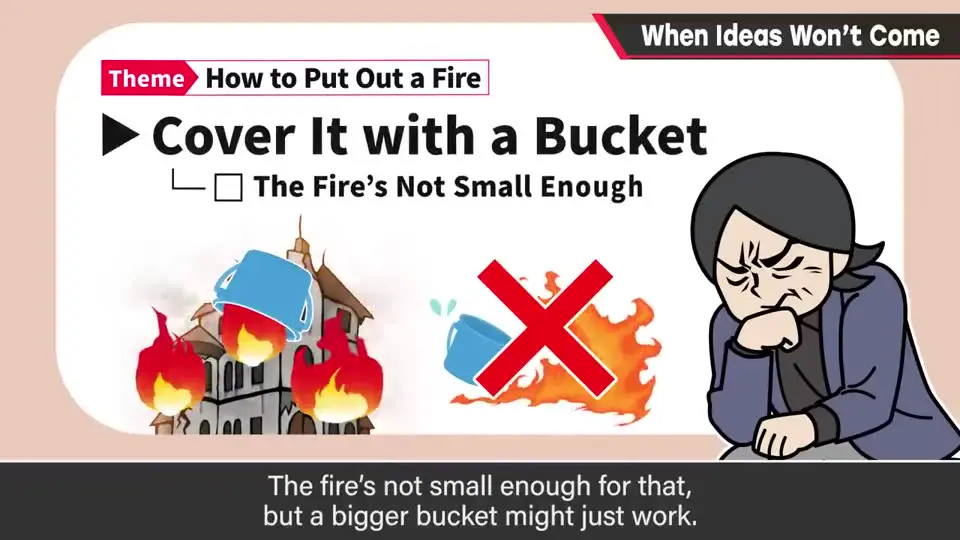
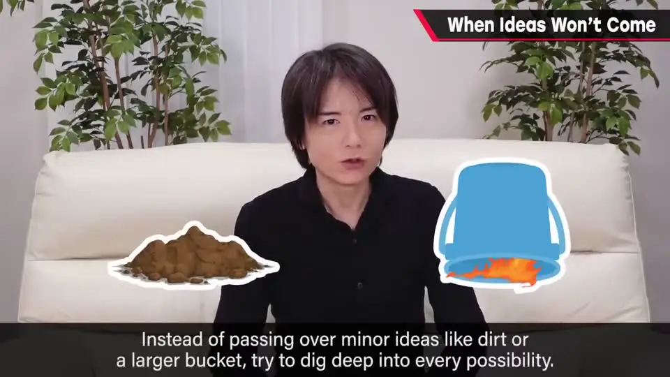
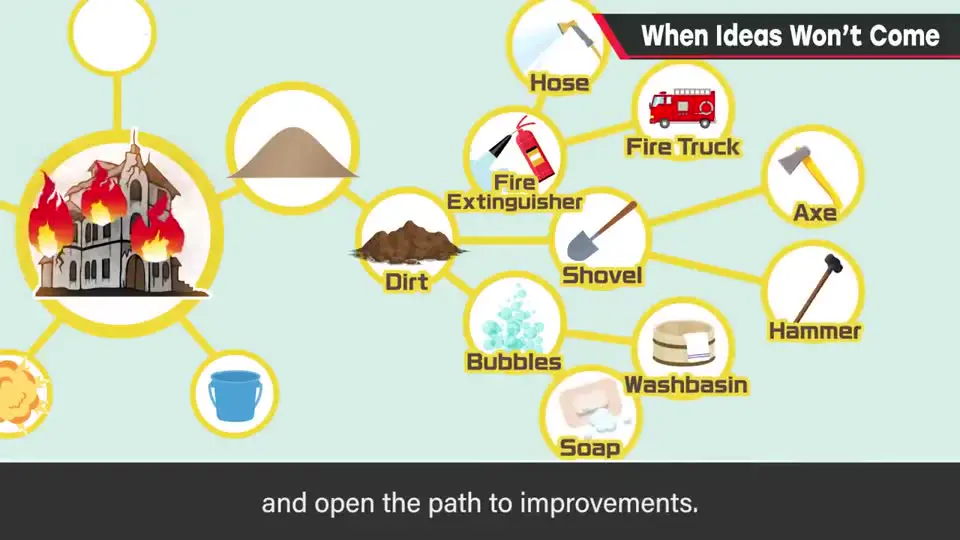
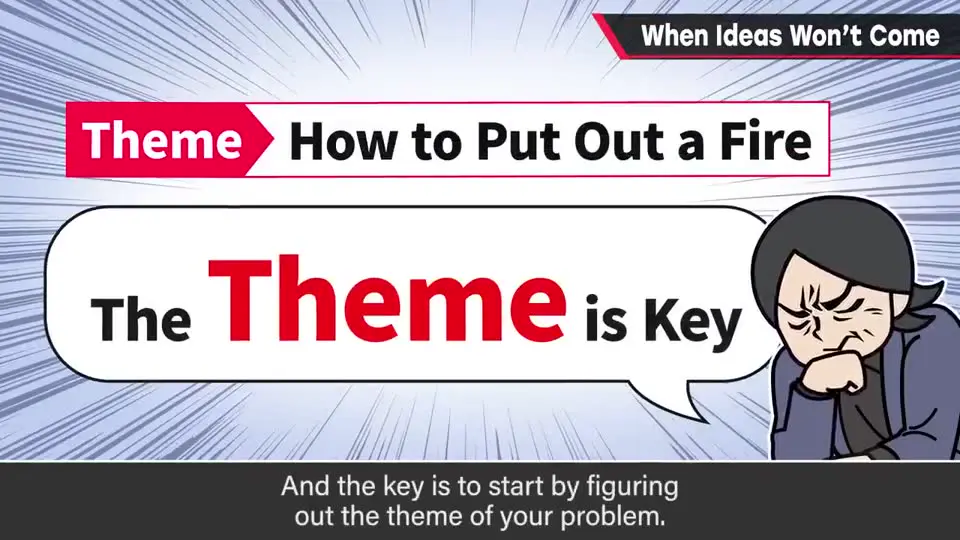

速览
必须拿出点子却怎么也想不出来时怎么办？有人会选择干脆去睡觉，但樱井多半会想了又想，硬挤出来。他的方法：① 先用简单的方式定义问题的主题（例：如何在某栋废弃建筑里灭火）；② 在脑中反复试错：用水？附近没水。隔绝空气？做不到。盖沙子？没有沙……那土呢？用爆炸？波及太大。盖桶？火不小——但桶够大也许行；③ 不放过「土也许行」「大桶也许行」这种细小线索，进一步深挖；不要停止联想，实现性低也先拿出来，拼数量，筛选放后面。反正是自己脑子里的事，没人在看——广撒网就可能钓到点子。关键是一开始要有「主题」这颗种子：从零开始想，自然没有抓手。
1. 怎么也想不出点子时 0:03
必须拿出点子、却怎么也想不出来——你会怎么办？也有「干脆去睡觉」的做法，但樱井多半会想了又想，设法硬挤出来。这不一定能解决问题，但作为一种想点子的方法，不妨半信半疑地听听。
2. 第一步：定义问题的主题 0:33

先用某种形式定义问题的主题，简单就好。举个例子：「如何扑灭某栋废弃建筑里的火」。
3. 第二步：在脑中反复试错 0:45
| 想法 | 问题 | 线索 |
|---|---|---|
| 用水扑灭 | 附近没有水 | — |
| 隔绝空气 | 无法隔绝空气 | — |
| 盖上沙子 | 好像也没有沙子 | 土的话也许行？ |
| 用爆炸灭火 | 对周围波及太大；炸药又从哪来？ | — |
| 盖上水桶 | 火没那么小 | 桶够大的话也许行？ |


4. 不停联想，数量优先 1:33
- 不要停止联想。实现性低也先拿出来；拼数量，删减放在后面。
- 这样至少能脱离「想不出点子，抱头苦恼」的状态，也能看到更好的改进方案。
- 反正是你自己脑子里的事，没人在看。多想、广撒网，也许就能引出点子。
- 樱井在决定游戏点子和规格时，大量地做过这种思考。

flowchart LR
A["定义主题
（种子）"] --> B["脑内大量试错"] B --> C["抓住细小线索
「土也许行」「大桶也许行」"] C --> D["继续深挖、联想不停"] D --> B D --> E["最后再筛选"]
（种子）"] --> B["脑内大量试错"] B --> C["抓住细小线索
「土也许行」「大桶也许行」"] C --> D["继续深挖、联想不停"] D --> B D --> E["最后再筛选"]
5. 关键：一开始要有「主题」这颗种子 2:15
最重要的是一开始要有问题主题这颗种子。从一无所有开始想，就会失去抓手——那样想不出点子也理所当然。樱井建议：先弄清楚问题是什么，再一步步逼近解决方法。

自测题
1. 想不出点子时，樱井建议的第一步是什么？为什么它最关键？
先用简单的形式定义问题的主题（如「如何在某栋废弃建筑里灭火」）。因为从一无所有开始想就失去了抓手，想不出点子也理所当然。 0:33
2. 在「灭火」例子中，樱井如何从失败的想法里找到线索？
逐个试错：水（附近没水）、隔绝空气（做不到）、沙子（没有）→「土也许行」；爆炸（波及太大）；盖桶（火不小）→「桶够大也许行」。不放过这些细小线索，继续深挖。 1:24
3. 这种想点子的方法中，关于「质量和数量」的原则是什么？
不要停止联想，实现性低也先拿出来，拼数量；筛选（删掉）放在后面。至少能摆脱抱头想不出点子的状态，也能看到更好的改进方案。 1:33